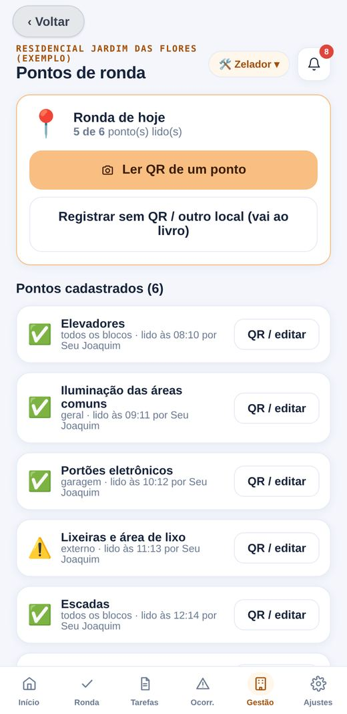
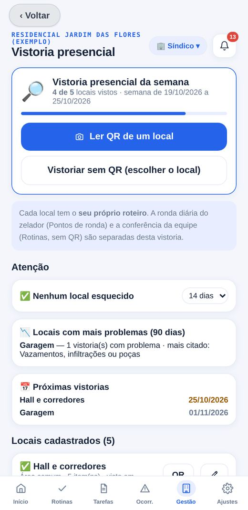
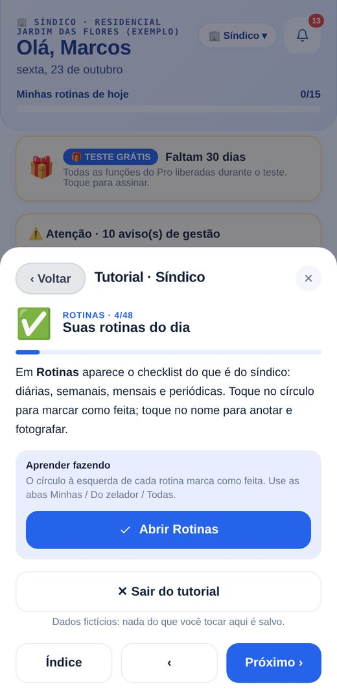

Condomínio de prédios
Elevadores, casa de máquinas, garagem e salão de festas entram nas rondas e vistorias.
- Ronda por QR code em cada ponto
- Reservas do salão e da churrasqueira
- Encomendas e chaves na portaria
O síndico passa as tarefas, o zelador cumpre com foto e devolve o comprovante. Rondas por QR code, vistorias, vencimentos, plantão e cobrança de inadimplentes ficam no aparelho, mesmo sem sinal.
No teste de 30 dias todas as funções do Pro ficam liberadas. Você instala pela tela inicial do celular, sem loja de aplicativos.

A unidade pode ser apartamento, casa ou lote. Locais de ronda, espaços e vistorias vêm do seu cadastro, então o app se ajusta ao seu condomínio.
Elevadores, casa de máquinas, garagem e salão de festas entram nas rondas e vistorias.
Portaria, portões, vias internas e áreas de lazer ganham a mesma organização.
O presidente tem perfil próprio, com mandato, diretoria e as ferramentas de gestão.
Cada função tem sua cor, suas telas e sua senha. Na tela inicial você escolhe quem usa o aparelho.
Monta as rotinas, acompanha a execução e cuida da gestão.
Tem a rotina do dia na mão: o que fazer, onde passar e o que registrar.
O app já vem com rotinas por frequência para cada função: diárias, semanais, mensais, semestrais, anuais e sob demanda. O síndico edita tudo em Rotinas › Gerenciar. Os exemplos abaixo vêm do condomínio de demonstração.
As rotinas semanais caem em dias fixos, e o app avisa o que está pendente.
Você cadastra os pontos, imprime uma etiqueta para cada um e o celular do zelador registra a leitura na hora. Nada vem fixo no sistema: elevador, garagem, sauna ou portão, tudo sai do seu cadastro.

Capturas do tutorial guiado, que usa um condomínio fictício. Arraste para o lado para ver todas.
Nomes, valores e datas das telas são exemplos.
Os boletos continuam com a administradora. O app cuida da rotina, do controle e dos relatórios.
Datas de obrigações trabalhistas e fiscais e periodicidades de vencimentos são modelos editáveis. Confirme com seu contador e seu engenheiro.
Ao importar, as rotinas entram na lista do síndico e seguem para o zelador no próximo plano. Você também exporta os seus e compartilha com outro síndico por arquivo.
Os dois aparelhos se falam por arquivos de troca em PDF. Não precisa de servidor nem de cadastro online. Cada aparelho tem o seu ID, e você informa o ID do outro aparelho em Ajustes.

Na primeira abertura, o app oferece um tutorial com moradores, ocorrências, finanças e vistorias já preenchidos. Você pode tocar em tudo: nada é salvo e seus dados reais não mudam.
Os dados do condomínio ficam no celular de quem usa. O app não envia informação para servidores do fornecedor, e os dados pertencem ao condomínio.
No teste, todas as funções do Pro ficam liberadas. Quando acabar, você assina o Pro para continuar usando.
A senha é opcional durante o teste. Ao assinar o Pro ela passa a ser obrigatória.
Valor de 1 mês em promoção por tempo limitado. WhatsApp: (15) 99829-3087
Como o Pro é liberado: no app, abra Assinar, copie o ID do aparelho e envie pelo WhatsApp. Você recebe um código que funciona só nesse aparelho.
O app é um site que se instala na tela inicial do celular e depois abre sem internet. Toque em Instalar a versão grátis, abra o app e siga o passo do seu aparelho.
Não. Depois de instalado, o app trabalha com os dados guardados no aparelho. A internet só é usada para abrir o WhatsApp ou instalar.
Sim, cada um no seu aparelho. Eles trocam as rotinas e os comprovantes por arquivos em PDF, sem servidor.
Para continuar usando, você assina o Pro. Seus dados continuam no aparelho.
Sim, o número é obrigatório, com DDD. Sempre que você cria ou altera a senha, uma cópia dela vai para esse WhatsApp. No teste grátis a senha é opcional.
Sim. A unidade pode ser apartamento, casa ou lote, e os locais de ronda, os espaços e as vistorias vêm do seu cadastro.
Pode. O síndico liga, desliga, cria e ajusta frequência e responsável em Rotinas › Gerenciar. Há ainda nove pacotes de checklists prontos para importar.
Não. Os boletos continuam com a administradora. O app registra saldo, receitas, despesas, inadimplência e prestação de contas.